Pantalla inicial con ejemplos verificados contra el corpus y el aviso de modo demostración.

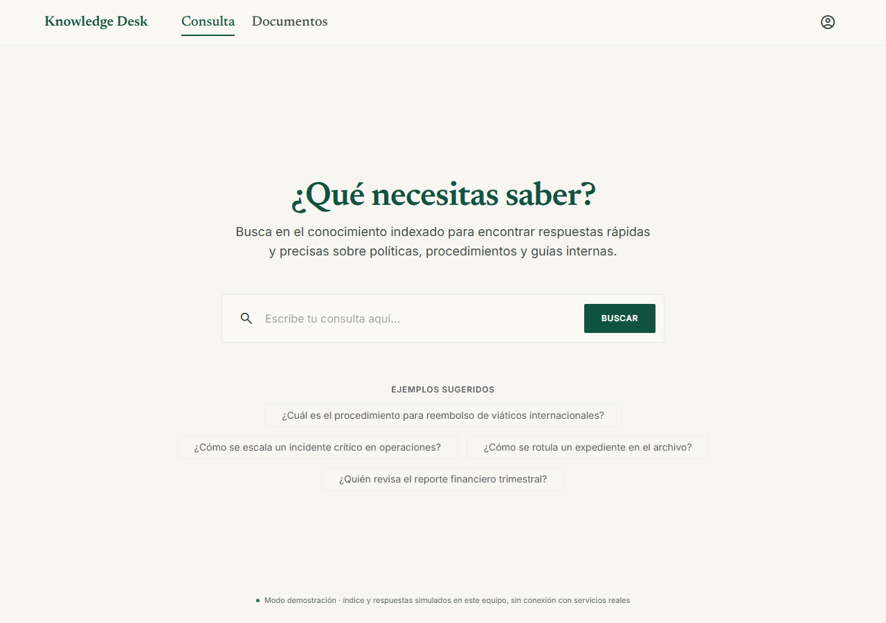
Consulta — Knowledge Desk.pdf (PDF)
Respuesta sustentada: cobertura, puntos clave y fuentes con su ruta JSON.

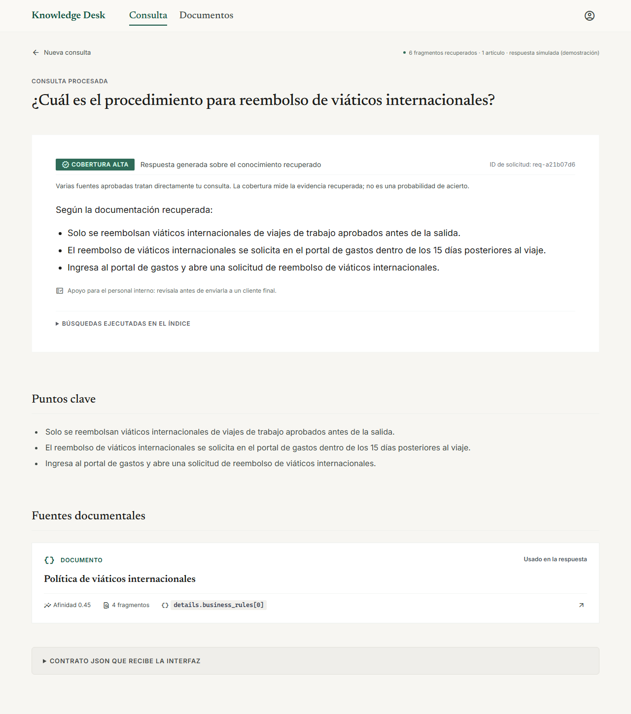
Resultados — Knowledge Desk.pdf (PDF)
Cobertura baja real: no se genera respuesta.

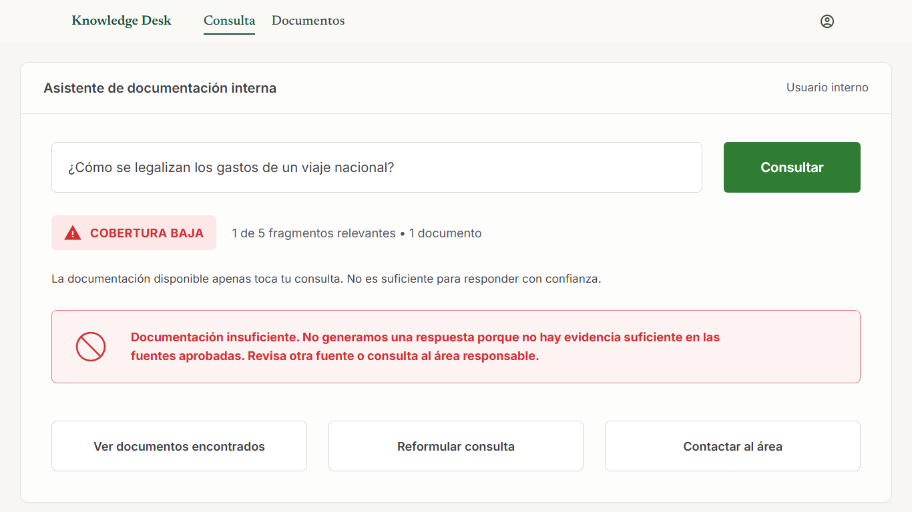

Mensaje de error en pregunta.png
Sin evidencia: sin documentos que ver ni referencias inventadas.

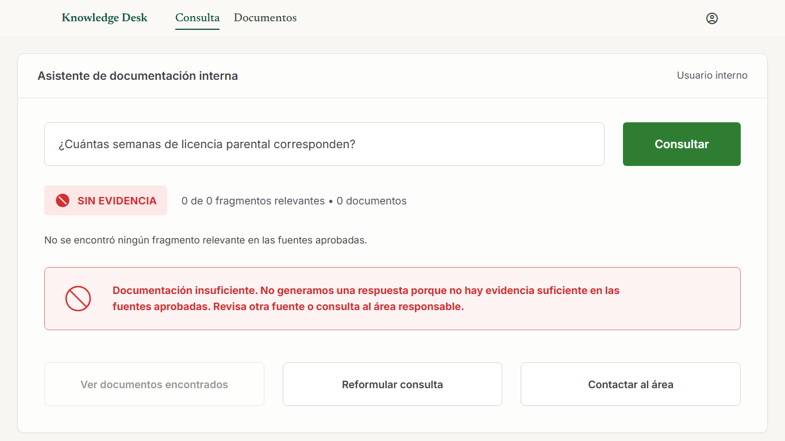
Mensaje de error en pregunta.png
Validación real del servidor (422) con ID de soporte y contrato JSON.

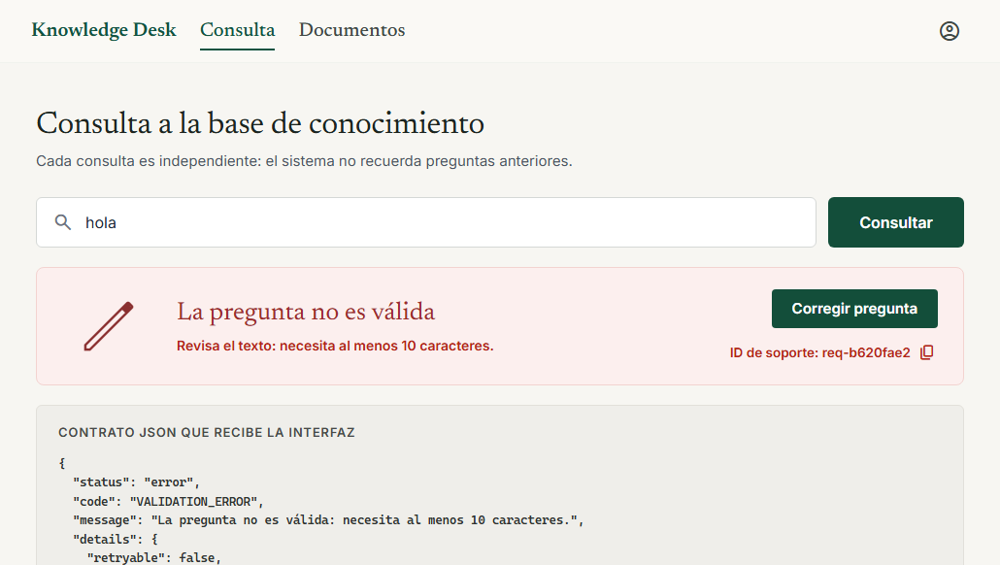

Consumir los servicios de consulta 2.png
Fallo "retrieval" inyectado en el servicio de consulta simulado.

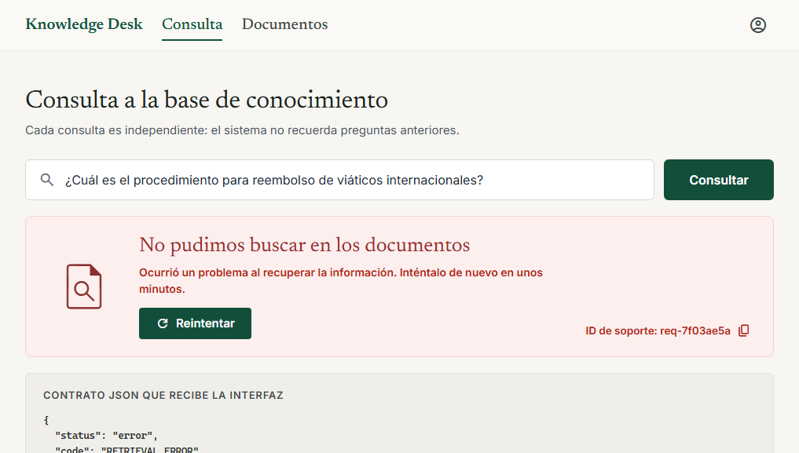

Consumir los servicios de consulta 3.png
Fallo "vector" inyectado en el servicio de consulta simulado.

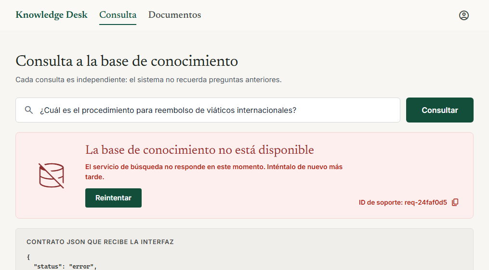

Consumir los servicios de consulta 4.png
Fallo "proveedor" inyectado en el servicio de consulta simulado.

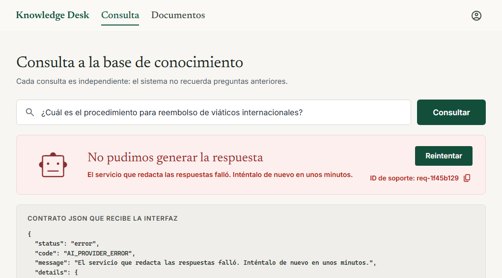

Consumir los servicios de consulta 5.png
Tiempo máximo del servidor (30 s) agotado: TIMEOUT sin respuesta parcial.

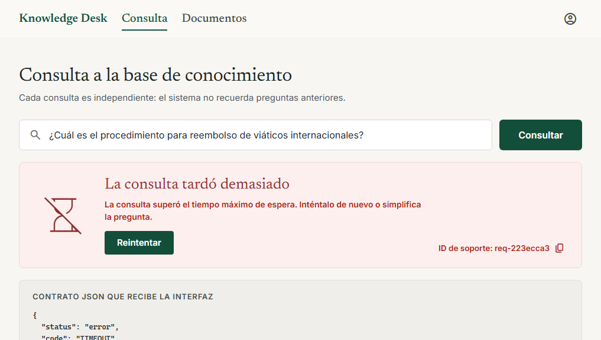
Lista real: Indexado, Procesando (reintento esperando al índice) y Error (sin contenido indexable).

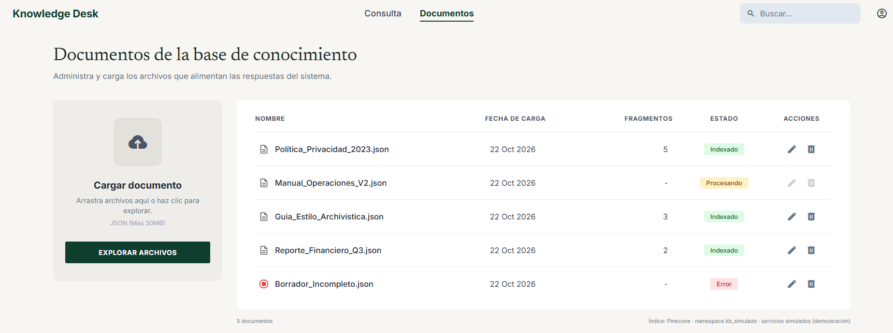

Vista de documentos.png
Motivo real del Error de Borrador_Incompleto.json: sin contenido indexable.

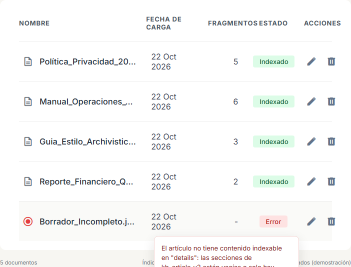
Diálogo de reemplazo con el título canónico del artículo y su versión activa.

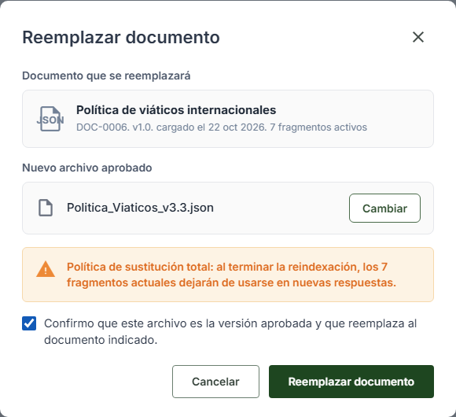

Vista de edicion de documento.png
Reemplazo verificado: la nueva versión ya está activa.

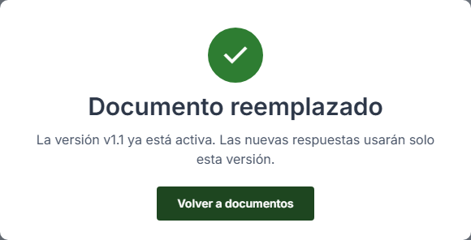

Mensaje de exito de reemplazo de documento.png
Fallo real de indexación: se conserva la versión vigente y no se publica la nueva.

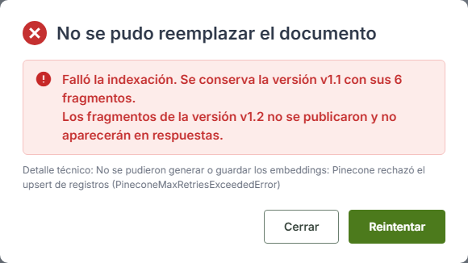

error ar reemplazar archivo.png
Confirmación explícita antes de eliminar.

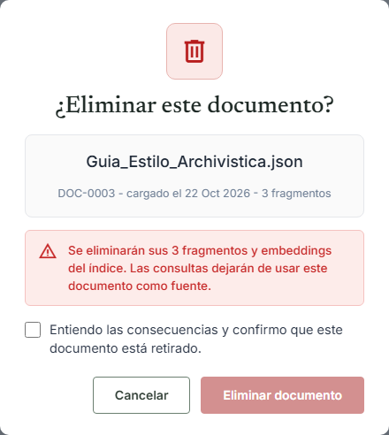

Eliminar documento.png
El índice conservó 1 embedding: no se informa éxito y el documento queda bloqueado.

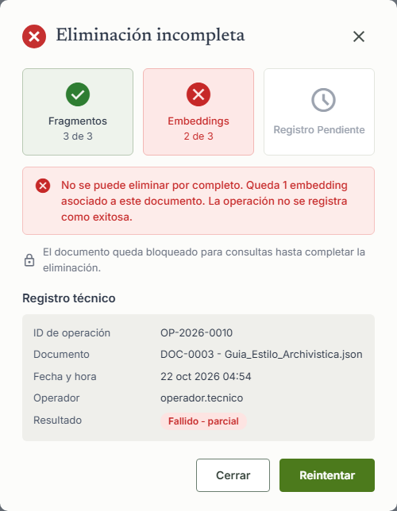

Eliminacion incompleta.png
Reintento completo: fragmentos, embeddings y registro retirados.

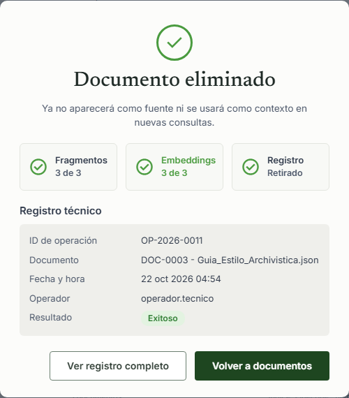

Exito eliminado.png
JSON original de la versión usada: formateado, rutas resaltadas y SHA-256 verificado en el navegador.

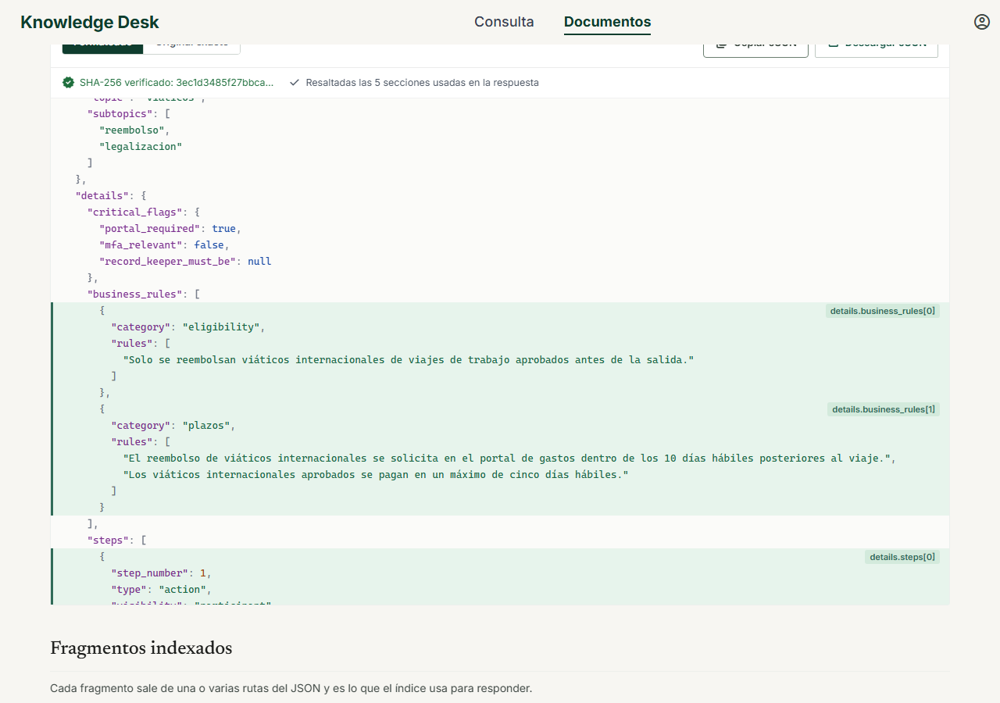
La misma vista completa: JSON, fragmentos indexados con sus rutas y registro técnico.

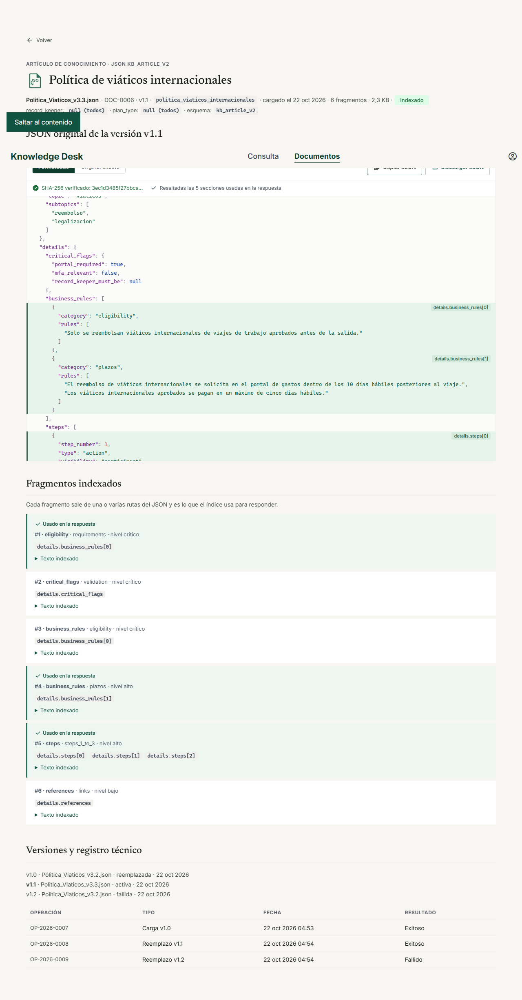
Artículo de ForUsGuide: se muestran sus fragmentos indexados y se avisa que no es el JSON original.

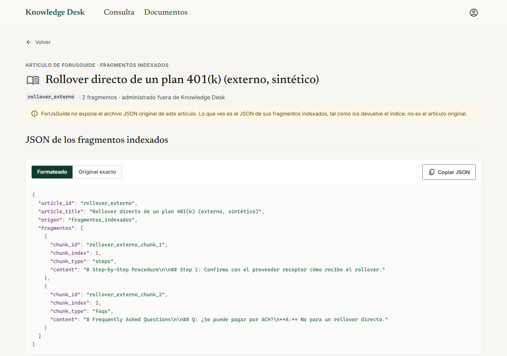
Consulta en móvil.

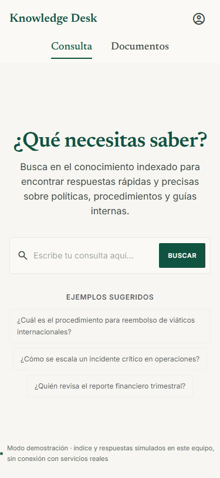
Resultados en móvil.

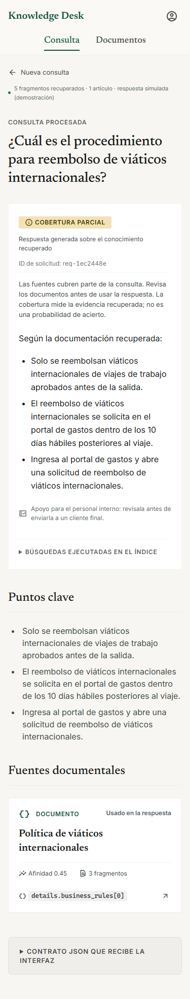
Documentos en móvil: cada artículo como tarjeta.

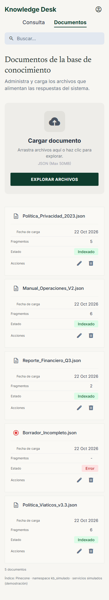